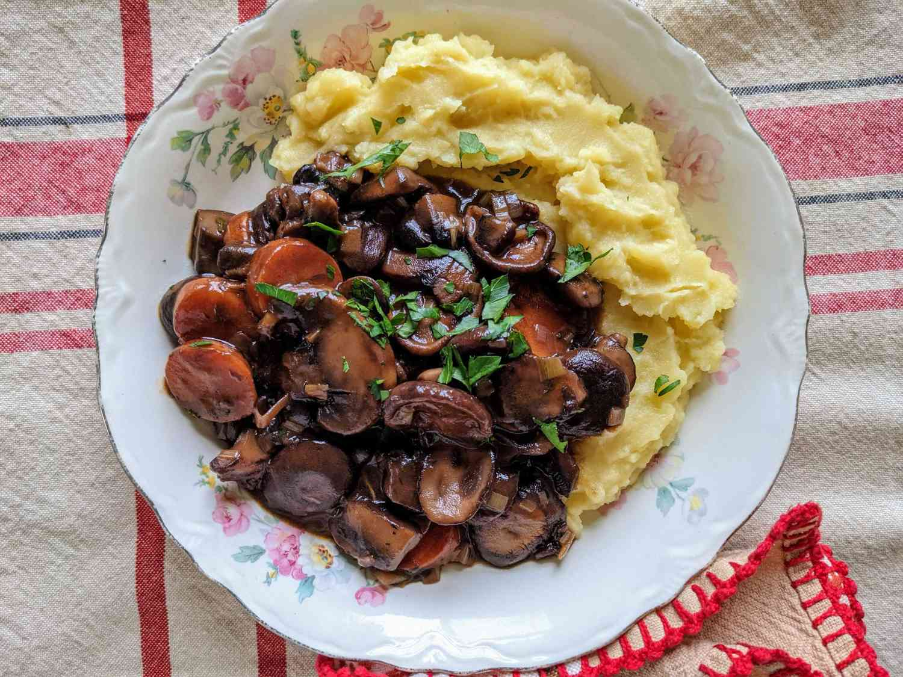

In this recipe, mushrooms are simmered with onions, wine, and carrots, making for a rich, French-style mushroom stew. Serve it with egg noodles, polenta, or mashed potatoes.
Combine mushrooms and onions in a large bowl; toss gently to mix.
Heat 2 tablespoons oil in a very large pot over medium-high heat. Add mushroom-onion mixture, in batches, to cover bottom of pot in a single layer; cook, without stirring too much, until begins to brown and caramelize on one side, 3 to 5 minutes. Stir and cook until other side is browned, 3 to 5 minutes. Transfer to a large bowl using a slotted spoon. Add 2 tablespoons oil to the pot; repeat with another batch mushroom-onion mixture. Repeat until all mushroom-onion mixture is cooked.
Season mushroom-onion mixture with salt and black pepper; set aside.
Reduce heat to medium-low; add 1 tablespoon oil to the same pot. Add carrots and leek; cook until leek turns light golden and starts to soften, about 5 minutes. Add garlic; cook until fragrant, about 1 minute. Stir in tomato paste; cook 1 minute. Add flour; cook and stir 1 minute more.
Stir in wine, vegetable broth, tamari, thyme, bay leaves, and cayenne pepper while scraping the browned bits of food off the bottom of the pot with a wooden spoon. Carefully add mushroom-onion mixture; bring to a simmer.
Reduce heat to low; simmer, partly covered, until carrots and onions are tender and sauce has thickened, 30 to 40 minutes.